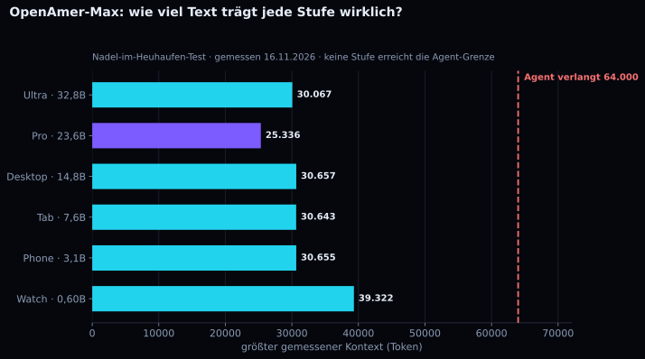

Wie viel Text tragen die Modelle wirklich?
Gemessen am 16.11.2026 — nicht aus Modellkarten abgeschrieben. Ein Fakt steht bei 50 % Tiefe in einem langen Text, das Modell muss ihn zurückgeben.

| Stufe | Parameter | Maximum | gemessen | Anteil |
|---|---|---|---|---|
| Watch | 0,60B | 40.960 | 39.322 | 96 % |
| Phone | 3,1B | 32.768 | 30.655 | 94 % |
| Tab | 7,6B | 32.768 | 30.643 | 94 % |
| Desktop | 14,8B | 32.768 | 30.657 | 94 % |
| Pro | 23,6B | 32.768 | 25.336 | 77 % |
| Ultra | 32,8B | 32.768 | 30.067 | 92 % |
Was das belegt
Der Kontext wird nicht abgeschnitten, und ein Fakt an 50 % Tiefe bleibt bis 39.322 Token auffindbar. Jede Stufe trägt ihren dokumentierten Kontext — fünf von sechs zu über 90 %, Pro wegen Speicherdeckelung zu 77 %.
Die unbequeme Zahl: OpenAmer Agent verlangt mindestens 64.000 Token
Kontext (Konstante im Code). Keine Stufe erreicht das — 39.322 ist unser Maximum.
Für den Agenten auf einem eigenen Modell ist die Familie damit zu klein, unabhängig
von Konfiguration oder Hardware.
Was das nicht belegt
- Kein Verständnisbeweis. Ein Faktenabruf ist der einfachste Kontexttest. Wer ihn besteht, kann an einer Aufgabe scheitern, die den ganzen Text verstehen muss.
- Ein Testfall, nicht zwanzig. Ein einzelner Fakt an einer Stelle — kein Beweis für Robustheit bei mehreren Fakten oder Widersprüchen im Text.
- Keine Qualitätsaussage. Der Test misst nur: wird der Text überhaupt verarbeitet.
Zwei Fehler im Prüfstand (dokumentiert)
Weil sie zu falschen Ergebnissen führten und ein Bericht ohne diese Offenlegung wertlos wäre:
- Kontextfenster ohne Reserve. Bei
num_ctxgleich der Zielgröße schneidet Ollama den Prompt ab (gemessen: 1.026 statt 2.128 Token) — die Nadel fiel weg. Die erste Messreihe zeigte deshalb fälschlich „0 von 9 richtig". - Deckelung bei 32k. Bei Ziel 32.768 schnitt Ollama erneut ab (16.386 statt ~39k), weil die Modelle bei 32.768 deckeln. Die Zielgröße muss darunter liegen.
Ultra: erst falsch eingestellt, dann repariert
Fassung 1 erzwang num_gpu 0 — alles auf der CPU, rund 17 Token/s, Abbruch bei 16k. Fassung 2 legt 10 von 64 Schichten in den VRAM: rund 200 Token/s, 30.067 Token in 148 Sekunden. Die alten Werte bleiben als Historie in den Rohdaten.
Nachrechnen
Alle Rohdaten und der Prüfstand liegen offen:
github.com/openamer-max/models docs/KONTEXT-MESSUNG.md Bericht tools/kontexttest.py Prüfstand reports/kontext_*.json Rohdaten je Stufe
python tools/kontexttest.py --modell watch --groessen 2500,10000,20000,32768